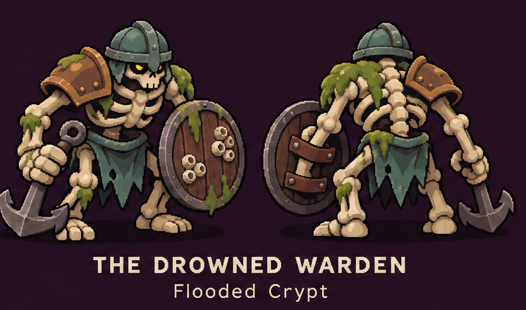
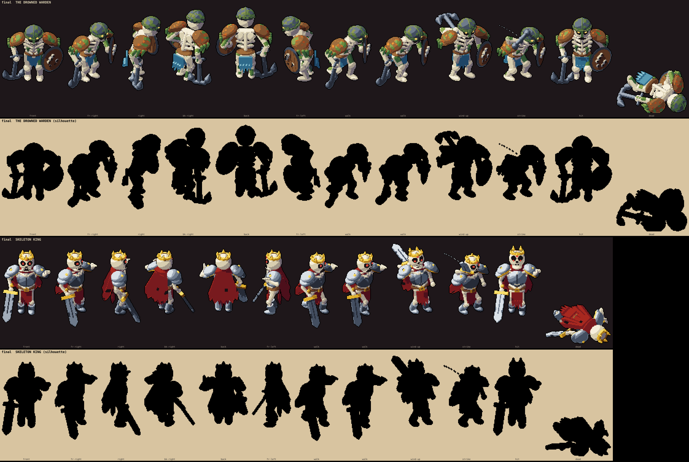
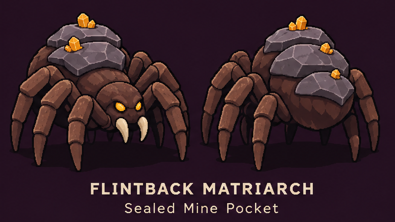
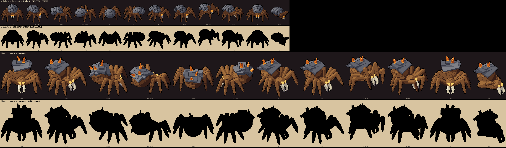
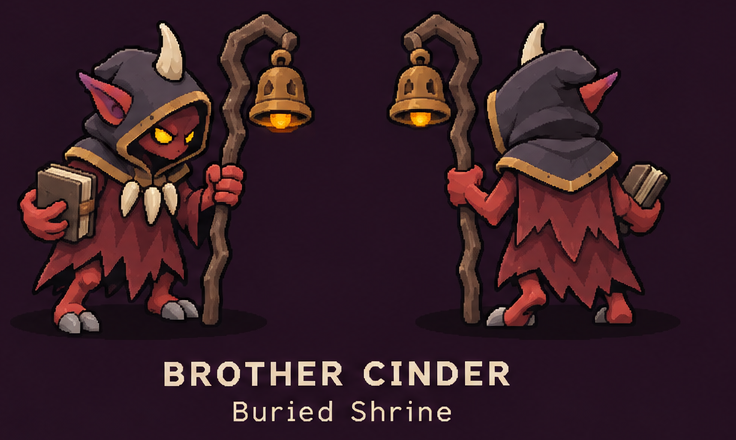
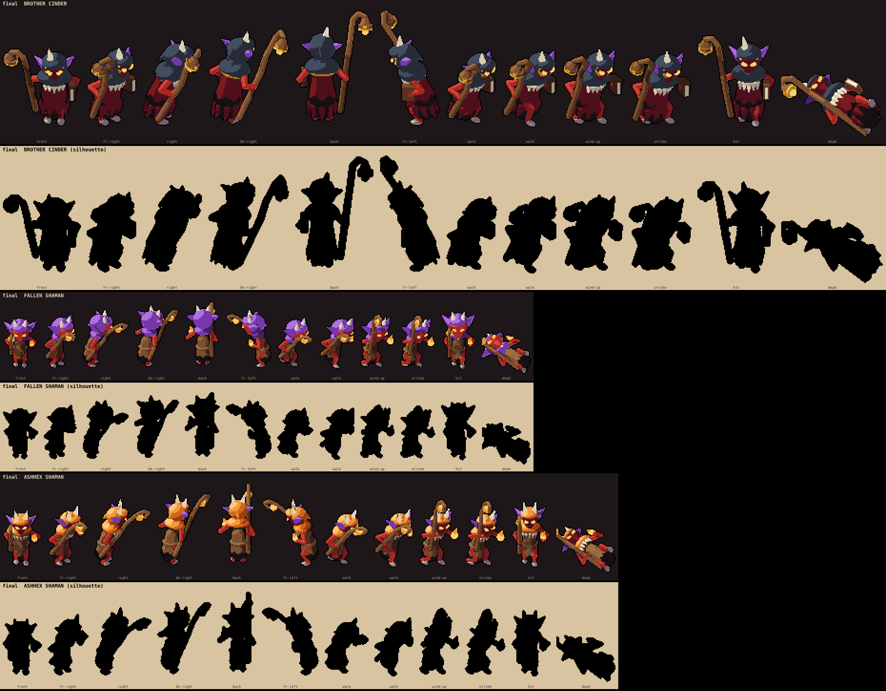

The hidden bosses from your Secret Bosses sheet, each with 4-7 passes judged side by side in both orders, normal head proportions. All are new: each is shown beside its nearest relative for size (Skeleton King, Stoneback, Fallen Shaman and Ashhex). None spawn yet; the main chat decides where to hide them. Every other monster and the heroes render exactly as before.

Flooded Crypt. A huge hunched skeleton with long heavy arms (shown above the Skeleton King): crusted iron helm with nose guard, bronze-brown pauldrons with moss, moss on the bones, torn teal loincloth, barnacled round shield, an iron anchor dragged low. Weak spot: the helm reads greyer than the concept.


Sealed Mine Pocket. A big furry brown spider (shown under the Stoneback): ivory tusk fangs, thick banded legs, flint slabs on her back with glowing amber crystals. Weak spot: the slabs still look boxy, like a roof.


Buried Shrine. A red imp monk (shown above the Fallen Shaman and Ashhex): dark hood with gold trim, white horn, purple ears, fang necklace, ragged crimson robe, a book, and a tall crooked staff with a swinging, glowing bronze bell.
